Modularity indicates the presence of dense clusters of related nodes embedded within the network. In many systems, we can find a partition of nodes into specific communities or modules. This modularity metric an be expressed for a bipartite network as: latex \begin{equation} Q = \frac{1}{E} \sum_{ij} \left( B_{ij} - \frac{k_i d_j}{E} \right) \delta(g_i,h_j), \end{equation} /latex where 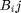 is the element in the bipartite matrix representing a link (1) or no link (0) between nodes 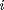 and 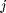, 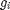 and 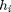 are the module indexes of nodes (that belongs to set 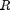) and (that belongs to set 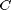), 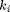 is the degree of node , 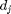 is the degree of node and 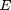 is the number of links in the network. BiMat contains three algorithms to maximize the last equation, all of them containing different heuristics.
The next example shows how to detect modularity using the default algorithm:
matrix = MatrixFunctions.BLOCK_MATRIX(2,10); bp = Bipartite(matrix); bp.community.Detect();
Modularity: Used algorithm: AdaptiveBrim N (Number of modules): 2 Qb (Standard metric): 0.5000 Qr (Ratio of int/ext inter): 1.0000
We can also change the default algorithm before detecting the community structure, choosing among one of the three options described before:
bp.community = LPBrim(matrix); bp.community.Detect();
Modularity: Used algorithm: LPBrim N (Number of modules): 2 Qb (Standard metric): 0.5000 Qr (Ratio of int/ext inter): 1.0000
Further, there is no need to work directly with a bipartite instance. The user can also chose to work with a BipartiteModularity instance instead:
%By creating an instance and then calculating modularity com = LeadingEigenvector(matrix); com.Detect(); %Or by calling a static method: com2 = BipartiteModularity.LEADING_EIGENVECTOR(matrix);
Modularity: Used algorithm: LeadingEigenvector N (Number of modules): 2 Qb (Standard metric): 0.5000 Qr (Ratio of int/ext inter): 1.0000 Modularity: Used algorithm: LeadingEigenvector N (Number of modules): 2 Qb (Standard metric): 0.5000 Qr (Ratio of int/ext inter): 1.0000
Altough by calculating the modularity we can already see what are the modularity results, sometimes we may need to know detailed values. By just typing the name of the BipartiteModularity instance we have access to these values:
%A list of all properties
com2
com2 =
LeadingEigenvector with properties:
DoKernighanLinTunning: 1
matrix: [20x20 logical]
n_rows: 20
n_cols: 20
n_edges: 200
bb: [20x20 double]
index_rows: [20x1 double]
index_cols: [20x1 double]
trials: 20
Qb: 0.5000
Qr: 1
N: 2
row_modules: [20x1 double]
col_modules: [20x1 double]
done: 1
optimize_by_component: 0
print_results: 0
%Number of modules
com2.N
ans =
2
%Module indices for row nodes
com2.row_modules'
ans =
Columns 1 through 13
1 1 1 1 1 1 1 1 1 1 2 2 2
Columns 14 through 20
2 2 2 2 2 2 2
%Moudlarity value
com2.Qb
ans =
0.5000
The default behavior of BiMat is to optimize modularity using the entire adjacency matrix. However, some times the network may have isolated components (sub-graphs with no connections between them). For those instances, the user may want to optimize each sub-graph independent of the others, and then calculate the modularity:
%Loading the data load data/moebus_data.mat; %default optimization bp = Bipartite(moebus.weight_matrix > 0); bp2.community.optimize_by_component = false; %sub-graph optimization bp2 = Bipartite(moebus.weight_matrix > 0); bp2.community.optimize_by_component = true; %visualizing the results: plotFormat = PlotFormat(); plotFormat.back_color = [41,38,78]/255; plotFormat.cell_color = 'white'; plotFormat.use_labels = false; subplot(1,2,1); bp.plotter.SetPlotFormat(plotFormat); bp.plotter.PlotModularMatrix(); title(['$Q = ', num2str(bp.community.Qb),'$, $N = ',num2str(bp.community.N),'$'],... 'FontSize',16, 'interpreter','latex'); xlabel('Default Optimization','FontSize', 20); subplot(1,2,2); bp2.plotter.SetPlotFormat(plotFormat); bp2.plotter.PlotModularMatrix(); title(['$Q = ', num2str(bp2.community.Qb),'$, $N = ',num2str(bp2.community.N),'$'],... 'FontSize',16, 'interpreter','latex'); xlabel('Optimizaing by isolated components','FontSize', 20); set(gcf,'position', [70, 223, 1224, 673]);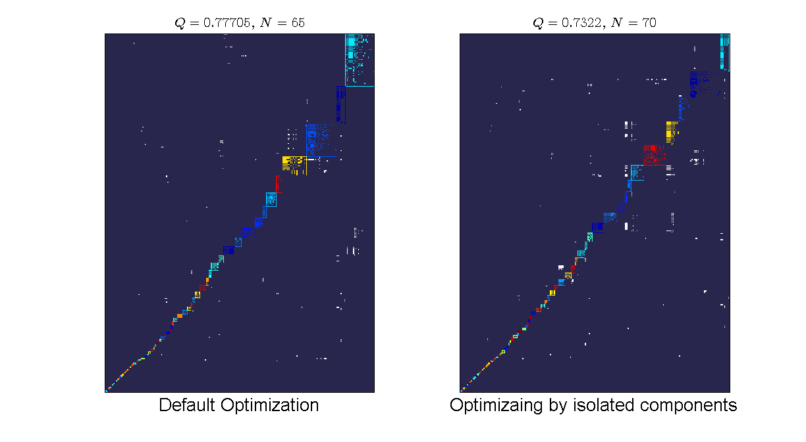
We can see that the default optimization gives a higher modularity value (we are optimizing at the entire matrix) but lower number of nodes than the component optimization. By optimizing at the component level, we do not have any more the constraint of the entire network optimization and therefore it is possible to break into more modules. However, the reported value is still the value of the entire network partition.